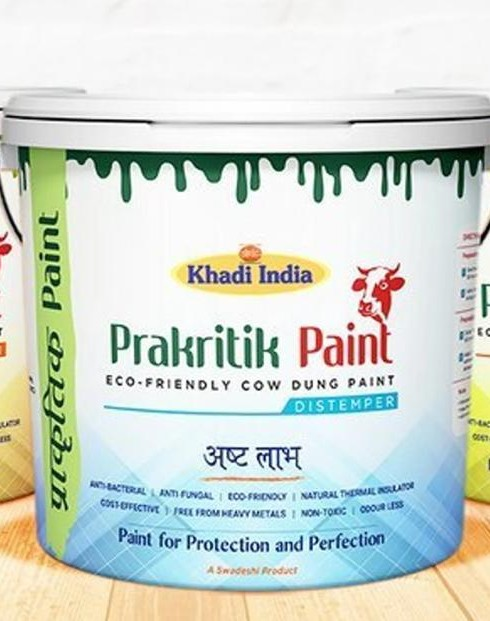
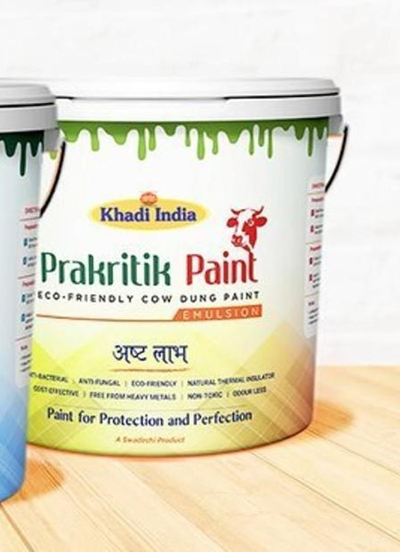

Prakritik Distemper Paint
1, 5, 10 & 20 kg packs · 200 sq.ft.** coverage · Matt finish.
View Distemper →Gaurikrit Bio Products (OPC) Private Limited makes Prakritik Paint — a cow dung-based paint in two formats, Distemper and Emulsion, for interior and exterior walls. The company is based in Khurja, District Bulandshahr, Uttar Pradesh.

Gaurikrit Bio Products (OPC) Private Limited — a One Person Company registered in District Bulandshahr, Uttar Pradesh – 203131.
Gaurikrit makes Prakritik Paint, a cow dung-based paint in two formats: Prakritik Distemper and Prakritik Emulsion. Both are matt finish, listed for interior and exterior use.
The company carries an old Indian material idea — cow dung on walls — into a contemporary paint format. A useful material, reconsidered for modern walls.
Cow dung-based, matt finish, interior & exterior usage.

1, 5, 10 & 20 kg packs · 200 sq.ft.** coverage · Matt finish.
View Distemper →
1, 4, 10 & 20 litre packs · 300 sq.ft.** coverage · Matt finish.
View Emulsion →An old Indian material idea, carried into a contemporary paint format.
Cow dung has been used on Indian walls and floors for generations. Gaurikrit offers cow dung-based Prakritik Paint in two formats.
The cow is in the material. The wall is where it goes.
Good for Nature. Good for Life.